📌 Chapter snapshot
- Chapter 3 of NCERT Curiosity, Science textbook for Grade 8 (reprint 2026-27): sections 3.1 to 3.5, 7 activities, Tables 3.1 and 3.2, Figs. 3.1 to 3.5 and 11 end-of-chapter questions.
- Big ideas: (1) Health = complete physical, mental and social well-being (WHO). (2) Lifestyle and a clean environment keep us healthy. (3) Diseases are communicable (caused by pathogens, they spread) or non-communicable (lifestyle, diet, environment, deficiency). (4) We prevent diseases with hygiene, sanitation, immunity and vaccines, and treat bacterial infections with antibiotics, used wisely.
- Most-asked in school exams (CBSE pattern): WHO definition, signs vs symptoms, communicable vs non-communicable, Table 3.1 (agent, site, symptoms, prevention), modes of spread and vectors, vaccines and acquired immunity, Jenner, Fleming, why antibiotics do not work on viruses, antibiotic resistance, the dengue graph.
- New words: health, well-being, lifestyle, AQI, symptom, sign, disease, pathogen, communicable, non-communicable, chronic, deficiency disease, vector, parasite, immunity, immune system, vaccine, acquired immunity, variolation, teekedaar, antibiotic, antibiotic resistance, eradicate.
🧪 7 live labs in this page (tap to jump)
Every section has its own colour, so you always know where you are. Everything works on a phone.
Video lesson: Health: The Ultimate Treasure
A 15-minute animated lesson with narration and subtitles. Tap a topic to jump to it.
Can't play it here? 🔒 Download the video (MP4) with the PIN from MT Classes and watch it offline.
Probe and ponder
The chapter opens with a bulletin board full of health news: "11.4% of India's population is diabetic", "Regular handwashing reduces infection by 50%", "Air pollution is a public health emergency", "Increase in screen time in children leads to a rise in obesity, sleep disorders and anxiety", "Yoga reduces anxiety and increases concentration", "Arrival of monsoon leads to increase in malaria and dengue cases".
😟 Worrying news
Diabetes (more than 100 million Indians, ICMR), obesity (28.6%), loneliness from social media, dry eyes from screens, air pollution, monsoon malaria and dengue, heart attacks.
😊 Good news and tips
Handwashing cuts infection by half, safe drinking water reduces disease, yoga helps the mind, reduce oil by 10% and cut sugar, join the Fit India Movement.
🤔 Probe and ponder (page 28), answered
- How does your body respond to an infection like the common cold? The immune system fights the virus. We get a runny nose, sneezing, cough, sore throat and sometimes fever: these help push out and fight the germs. In a week or so the body wins and we recover.
- Why do we rarely see smallpox or polio, but diabetes and heart problems are common? Smallpox was eradicated by vaccination, and polio is controlled by polio drops. Diabetes and heart disease are non-communicable and are rising because of lifestyle: processed food, little exercise, stress and longer lives.
- Could climate change lead to new types of diseases? Yes. Warmer, wetter weather helps mosquitoes spread to new places (malaria, dengue), heat waves and floods spread water-borne diseases, and germs can reach new regions.
- How do emotions like stress or worry make us sick? Long stress can cause headaches, poor sleep, loss of appetite, high blood pressure and weaker immunity. Mind and body are connected.
- Why are some groups affected more during outbreaks? People with poor nutrition, crowded housing, no clean water or toilets, the very young and old, people with other illnesses, and those far from hospitals or not vaccinated.
What is health?
Is being healthy just about not having diseases? No! Health also means feeling good physically, staying positive and having strong relationships.
📖 Activity 3.1: Let us read
A Grade 8 student moved to a new school in another city. With no friends and busy parents, he felt lonely. He spent more time on his phone and social media, which made him feel worse. He stopped making friends, had headaches, lost weight and could not sleep. A doctor advised less screen time and meeting a counsellor, who helped him make friends and get better.
Think and reflect, answered: The cause was loneliness (poor social and mental health), made worse by too much screen time. His habits (phone, no sleep, no friends) and surroundings (new city, busy parents) hurt his mental health, which then hurt his physical health (headaches, weight loss).
🌍 WHO definition (learn it word for word)
Health is a "state of complete physical, mental, and social well-being, and not merely the absence of disease".
A healthy person can do tasks efficiently, cope with difficult situations and adjust well with friends and society.
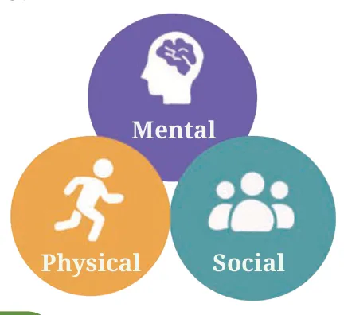
🏃 Physical
Body works well: good food, exercise, sleep, hygiene, no illness.
🧠 Mental
Calm, positive mind; can handle stress, worry and anger.
🤝 Social
Good relations with family, friends and society; not lonely.
🏺 Our scientific heritage: Ayurveda
True health is a balance of body, mind and surroundings. Follow dinacharya (daily routine) and ritucharya (seasonal routine), eat fresh wholesome food suited to your prakriti (body constitution), exercise, keep clean, sleep well and keep a calm mind through yoga, meditation and mindfulness.
⚖️ Live lab: Well-being Balance
Set your day with the sliders. Watch your physical, mental and social health bars and the triangle change.
How can we stay healthy?
Eat nutritious food, maintain hygiene, stay in a clean place, exercise regularly, get proper sleep, spend time with family and friends, and keep a positive attitude.
📝 Activity 3.2: Let us list
✅ Good habits
- Keep yourself clean (personal hygiene)
- Eat a healthy, balanced diet
- Exercise regularly
- Relax or meditate every day
- Add: wash hands before eating, brush twice, drink clean water, sleep on time, play outdoors
❌ Not good for health
- Too much time on mobiles and screens
- Fast food and junk food every day
- Sleeping late, too little sleep
- Skipping meals, especially breakfast
- Add: sugary drinks, sitting for hours, eating street food in the open, tobacco
Our health depends on our lifestyle (how we live) and our environment (our surroundings).
3.2.1 Maintain a healthy lifestyle
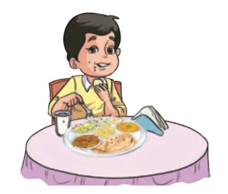
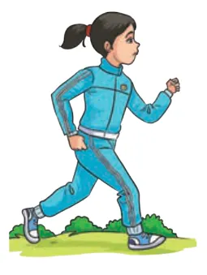
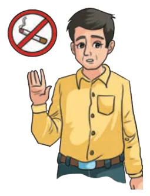
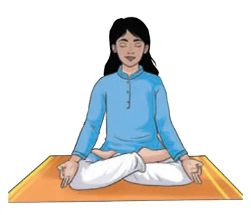
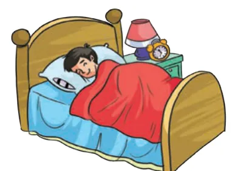
Fig. 3.2 How to be healthy
- Eat a balanced diet with plenty of fruits, vegetables and whole grains.
- Avoid processed, fatty or sugary food and drinks.
- Stay physically active: play outdoors, walk, run, cycle, exercise.
- Limit screen time and spend more time in nature.
- Get enough sleep so the body and mind rest and recover.
- Practise yoga or simple breathing exercises like pranayama.
- Say "NO" to tobacco, alcohol and addictive drugs.
Keep the environment clean
⚖️ Activity 3.3: Let us compare
Which playground would you like to play in, and why?
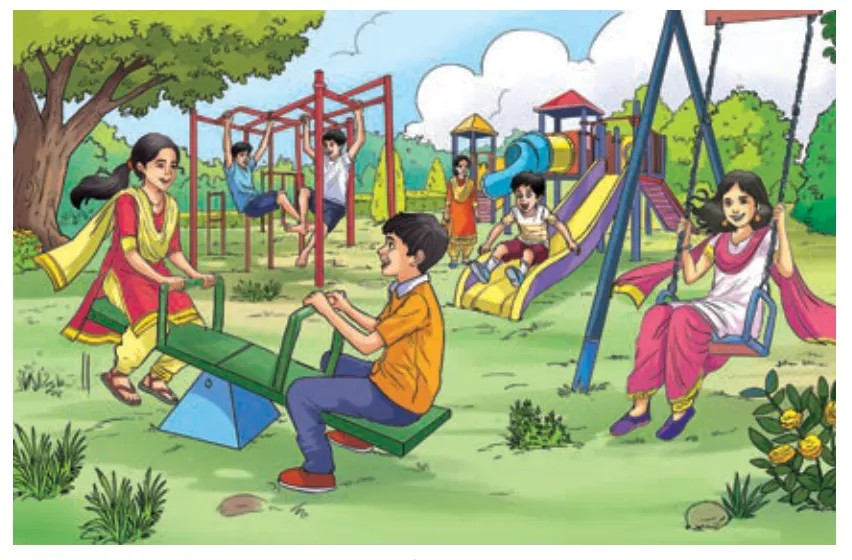
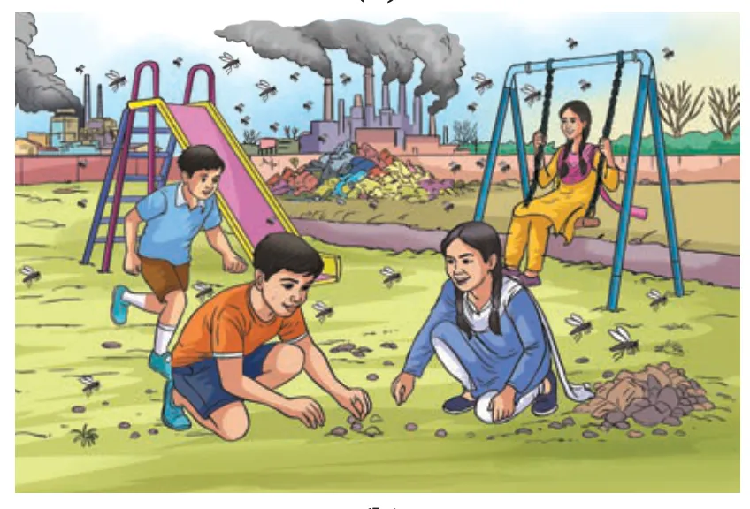
😀 Playground (a)
Clean, well-maintained, beautiful. Safe to play, fresh air.
🤢 Playground (b)
Polluted, dirty, unhygienic, full of flies and mosquitoes. People living here may fall sick more often.
- Along with good habits we must keep ourselves and our surroundings clean.
- Clean air and water are important. In cities, smoke from vehicles and factories causes coughing and asthma.
- The Air Quality Index (AQI) tells us how clean the air is.
- Health is not only the body: even in a clean place we may not feel good if we are lonely or upset. Talking, laughing and having fun with friends and family keep the mind healthy.
🌫️ Live lab: AQI Meter
Move the slider (or tap a city scene) to see the AQI category used in India and what you should do.
Good
Satisfactory
Moderate
Poor
Very poor
Severe
How do we know we are unwell?
When we feel unwell, something inside the body is not working as it should. The body gives us clues.
🗣️ Symptom = what WE FEEL
Only the patient can tell: pain, tiredness, dizziness, headache, nausea, itching, feeling cold.
🔍 Sign = what can be SEEN or MEASURED
Others can check: fever (high temperature on a thermometer), rash, high blood pressure, swelling, vomiting, jaundice.
💡 Memory trick
Symptom = Said by the patient. Sign = what a doctor can gauge. Signs and symptoms together help doctors understand what is making us unwell (diagnosis).
Diseases: causes and types
A disease is a condition that affects the normal working of the body or mind. It happens when one or more organs or organ systems stop functioning properly.
Some diseases are caused by germs (bacteria, viruses, fungi, worms or protozoa). Disease-causing organisms are called pathogens. Other diseases come from poor nutrition or an unhealthy lifestyle. Some last a short time; others last long and need regular care.
🦠 Communicable diseases
- Caused by pathogens
- Spread from one person to another
- Typhoid, dengue, flu, chickenpox, COVID-19, TB, cholera, malaria
🫀 Non-communicable diseases (NCDs)
- Not caused by pathogens
- Do not spread
- Linked to lifestyle, diet, environment
- Cancer, diabetes, asthma, heart disease
📈 Why NCDs are rising in India
People eat more processed food, get less exercise and live longer. Today, most deaths in India are caused by NCDs.
How do germs spread?
All communicable diseases are caused by pathogens. They enter through the air we breathe, contaminated food or water, and more.
- By air: an infected person coughs or sneezes.
- Direct contact: shaking hands, touching.
- Indirect contact: sharing personal items (towel, glass, handkerchief).
- By food and water: contaminated drinking water or food.
- By insects: mosquitoes and houseflies carry germs. Such carriers are called vectors.
- By animals: a rabid dog's bite spreads rabies.
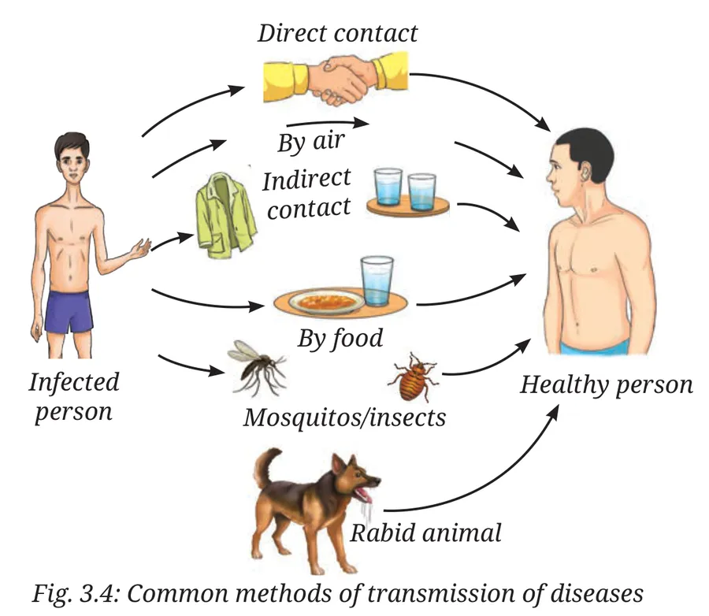
🔎 Activity 3.4 and Table 3.1: Some common communicable diseases
Check each card with books, trusted websites or your teacher, and think of simple steps to prevent each one.
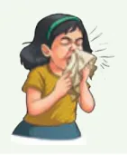
Common cold and influenza
Symptoms: blocked, runny nose, sore throat, fever, cough, body ache.
Prevent: wash hands often, don't share personal items, cover mouth and nose with a mask.
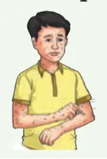
Chickenpox
Symptoms: mild fever, itchy skin, rashes, blisters.
Prevent: complete isolation of the patient, cover mouth and nose, vaccination.
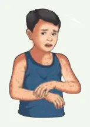
Measles
Symptoms: fever, sore throat, reddish rashes on neck, ears and skin.
Prevent: isolation, cover mouth and nose, good hygiene, vaccination.
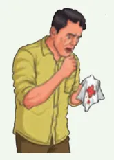
Tuberculosis (TB)
Symptoms: cough, fever, fatigue, loss of appetite, night sweats.
Prevent: avoid close contact with TB patients, cover mouth and nose, hygiene, vaccination (BCG).
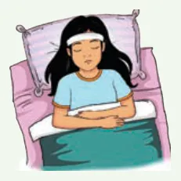
Hepatitis A
Symptoms: fatigue, fever, loss of appetite, nausea, vomiting, jaundice, pain in upper right abdomen.
Prevent: drink boiled water, vaccination.
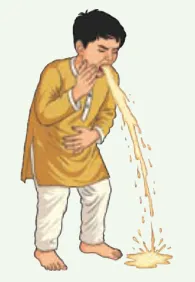
Cholera
Symptoms: diarrhoea and dehydration.
Prevent: personal hygiene, good sanitation, properly cooked food, boiled water, vaccination.
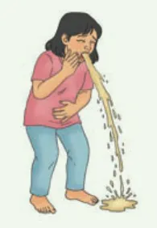
Typhoid
Symptoms: headache, abdominal discomfort, fever, diarrhoea.
Prevent: hygiene, sanitation, properly cooked food, boiled water, vaccination.
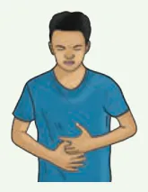
Ascariasis (roundworms)
Symptoms: worms in stool, loss of appetite, poor growth, diarrhoea, weight loss, anaemia.
Prevent: hygiene, sanitation, properly cooked food, boiled water.
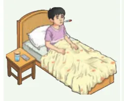
Malaria
Symptoms: high fever, heavy sweating, periodic chills.
Prevent: mosquito nets and repellents, long-sleeved clothes, stop mosquito breeding around the home.
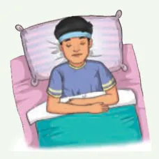
Dengue fever (break-bone fever)
Symptoms: fever, headache, muscle and joint pain, nausea.
Prevent: nets, repellents, long sleeves, stop breeding, avoid areas with still water.
🛡️ Simple but important precautions
- Keep ourselves and our surroundings clean; practise basic hygiene every day.
- Wash hands with soap and water to remove pathogens.
- Cover mouth and nose while coughing or sneezing; wear a mask in crowded places.
- Don't share towels and handkerchiefs; keep home, food and water clean.
- Stay home and rest when unwell: the body recovers and you don't spread it to others.
Some diseases are caused by worms living in our digestive system. They feed on our nutrients and live as parasites (organisms that live in or on another living being). They spread through contaminated food, water, soil or contact with infected people or animals.
🦠 Live lab: Germ Spread Simulator
One sick child enters a class of 50. Switch on good habits and press Play. Watch how far the flu spreads.
🧼 Live lab: Handwash Timer
Rub your hands with soap for at least 20 seconds. Press Start and follow the steps. Watch the germs disappear.
📊 Live lab: Dengue Graph (NCERT Q7)
Bar graph of dengue cases in one hospital. Tap a bar to read it. Switch on the rainfall line to see why cases rise.
Non-communicable diseases
Are diseases always caused by infections? No! NCDs like cancer, diabetes and asthma are linked to lifestyle, diet and/or environment. They are the most common cause of death in India.
🥕 Deficiency diseases
Caused by lack of specific nutrients: scurvy (vitamin C), anaemia (iron), goitre (iodine). They are non-communicable.
⏳ Chronic diseases
Last a long time (more than 3 months): cancer, diabetes, asthma.
🍬 Diabetes
Rising in adults and children; India has one of the highest numbers in the world. Causes: hormonal imbalance, unhealthy eating, little physical activity, being overweight or obese.
🤔 What if I take too much of a mineral or vitamin?
Excess can also harm. Too much salt (sodium) raises blood pressure, too much iron or vitamin A or D can poison the body, and too much sugar causes obesity and tooth decay. Balance is the key: get nutrients from a balanced diet, and take supplements only on a doctor's advice.
📋 Activity 3.5: Let us survey (Table 3.2, completed)
| S. No. | Lifestyle disease | Signs and symptoms | Suggested lifestyle change |
|---|---|---|---|
| 1 | Obesity | Excess body weight, tiredness, breathlessness on climbing stairs | Balanced diet and regular exercise |
| 2 | Diabetes | Frequent urination, excessive thirst, weight loss, tiredness, slow healing | Less sugar and refined flour, more fibre, daily exercise, healthy weight, regular check-ups |
| 3 | High blood pressure | Often no symptoms ("silent"), headache, dizziness; high reading on BP machine | Less salt and oily food, exercise, manage stress, no smoking |
| 4 | Heart disease | Chest pain, breathlessness, tiredness | Less oil and fried food, exercise, no tobacco, control BP and sugar |
🔬 Be a scientist: Kamal Ranadive (1917–2001)
A pioneering Indian biomedical researcher. She studied how hormones and certain viruses are linked to cancer, helping improve treatment and prevention, and showed how tobacco, diet and pollution raise cancer risk.
Preventing and controlling diseases
"Prevention is better than cure." We must protect ourselves from both communicable and non-communicable diseases.
📖 Activity 3.6: Odisha community-led sanitation campaign
In Bhadrak district, Odisha, a community campaign helped more people build and use toilets. Open defecation fell sharply and child health improved, with fewer cases of diarrhoea and infections.
Inference: simple steps like good sanitation can greatly reduce the spread of communicable diseases. (In India, the Swachh Bharat Mission is a similar nationwide campaign.)
Ability of the body to fight diseases
Some people get sick more often than others living in the same place. The natural ability of the body to fight diseases is immunity. The immune system is the body's special system that fights diseases.
💉 Vaccine
Drops or injections (polio, measles, tetanus, hepatitis) that prevent serious infections by viruses and bacteria.
🎓 Trains the immune system
It teaches the body to recognise and attack a germ before the real germ arrives.
🛡️ Acquired immunity
Protection developed after exposure to a pathogen or a vaccine.
🧪 How vaccines are made
From weakened or dead pathogens, or inactive/harmless parts. Newer ones make our cells produce a harmless germ part.
🩹 Example: tetanus shot
Given after an injury. It contains an inactivated bacterial toxin that helps the immune system build protection without causing the disease.
🛡️ Live lab: Immune Memory (NCERT Q11)
See how the body answers a germ the first time and the second time. Then try a vaccine first.
Jenner, smallpox and India's vaccines
Smallpox was a deadly disease that caused blisters and killed millions. A milder disease called cowpox, seen in cows, could also infect humans.
👀 Observation
Milkmaids who had cowpox did not catch smallpox (the two viruses are related).
💡 Hypothesis
Something in the pus of cowpox blisters protected people from smallpox.
🧪 Experiment
Edward Jenner (late 1700s) injected cowpox material into a boy, who later showed no illness when exposed to smallpox.
🌍 Result and application
People given cowpox became resistant to smallpox. This was the first vaccine. Mass vaccination eventually eradicated smallpox worldwide.
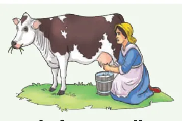
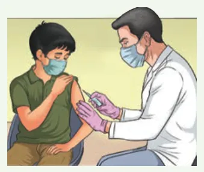
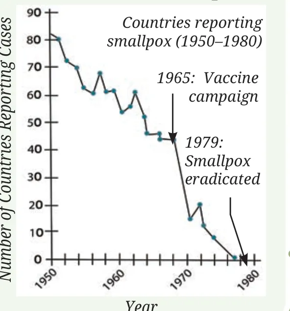
📉 Read the graph
About 80 countries reported smallpox in 1950. After the 1965 vaccine campaign the number fell steeply, and by 1979 smallpox was eradicated (WHO declared it in 1980). It is the first human disease wiped out by vaccination.
🏺 Our scientific heritage: variolation
Long before modern vaccines, India had a traditional method called variolation against smallpox: material from a smallpox sore was scratched into the skin to cause a mild infection and build immunity. The people who did this were called teekedaars.
🌏 Ever heard of… India's role in vaccine production
India is one of the world's largest vaccine producers and supplies many countries. Indian companies played a key role in the COVID-19 pandemic.
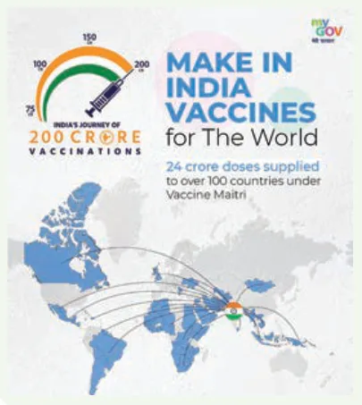
💉 Remember
- Vaccines protect people of all ages, prevent illness, reduce spread and save millions of lives every year.
- Vaccines are preventive, not curative: they do not treat someone who is already sick.
- They are carefully tested for safety. Getting vaccinated protects you and the people around you.
🔬 Be a scientist: Maharaj Kishan Bhan
Indian doctor and scientist, Secretary of the Department of Biotechnology. Played a key role in developing the Rotavirus vaccine, which protects children from diarrhoea, and believed in research for affordable healthcare.
Treatment of diseases
If the immune system fails to protect us, we fall ill and visit a doctor. For bacterial infections the doctor may give antibiotics, medicines that kill bacteria.
✅ Antibiotics WORK on
Bacteria: TB, typhoid, cholera. They target parts of bacterial cells that are different from human cells.
❌ Antibiotics DON'T work on
Viruses (cold, flu, dengue, chickenpox) and protozoa (malaria).
🔬 Think like a scientist: penicillin (1928)
Alexander Fleming, a bacteriologist in London, noticed that a mould on a discarded petri dish stopped bacteria from growing. The mould released a substance that killed bacteria. This chance discovery gave us penicillin, the first antibiotic.
Antibiotic resistance
Antibiotics have saved millions of lives, but indiscriminate (careless) use has made them less effective.
⚠️ Antibiotic resistance
Bacteria that were earlier killed by an antibiotic now survive and multiply despite treatment with it. Common infections become harder to treat, with more complications, longer illness and even death.
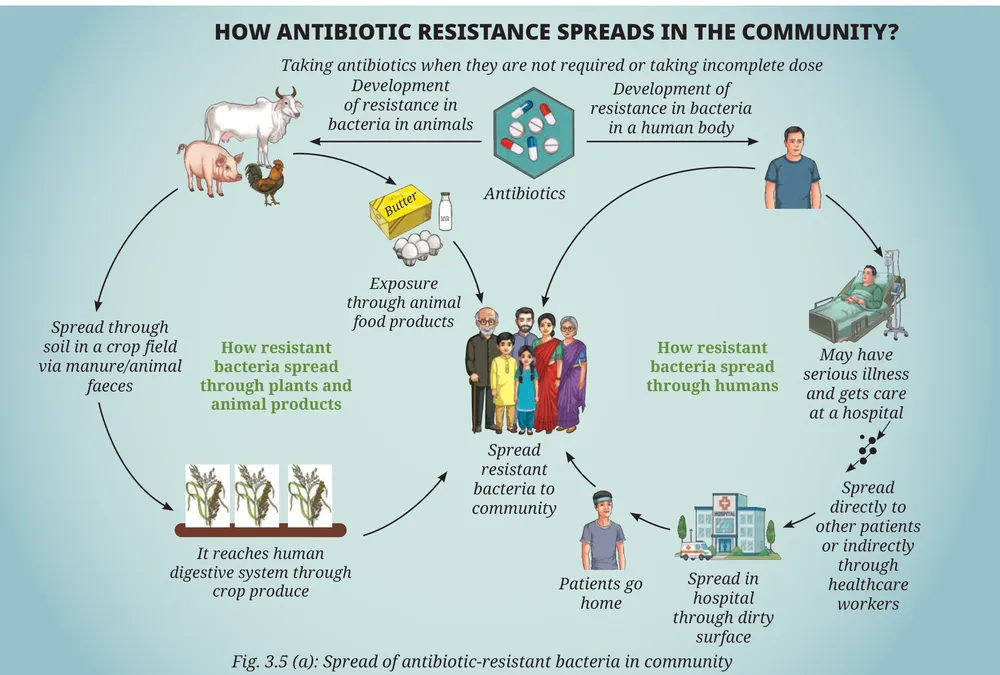
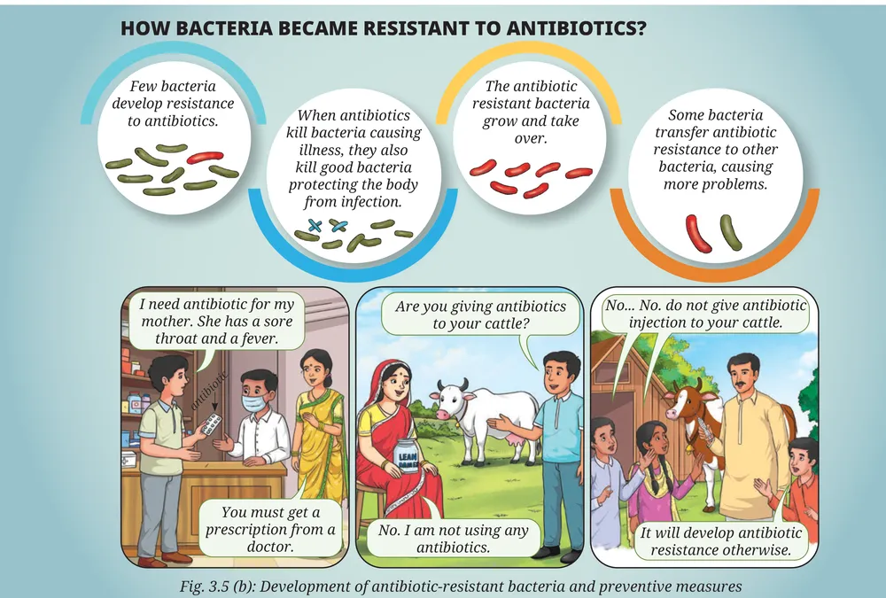
🔍 Activity 3.7: Let us infer
How does resistance develop?
- A few bacteria are naturally resistant to an antibiotic.
- The antibiotic kills the bacteria causing illness and also the good bacteria that protect us.
- The resistant bacteria grow and take over.
- Some bacteria pass resistance to other bacteria, causing more problems.
How it spreads: antibiotics given to animals → resistant bacteria in animal food products, manure, soil and crops → humans; in hospitals through dirty surfaces, healthcare workers and patients going home.
Precautions: take antibiotics only when prescribed by a doctor, in the correct dose and for the full duration; never buy them without a prescription; don't take them for colds or flu; don't give antibiotics to cattle without need; keep hospitals and hands clean.
💊 Live lab: Antibiotic Resistance Lab
100 bacteria cause an infection; a few (purple) are resistant. Choose how the patient takes the medicine and press Play.
Other ways of treating disease
🌿 Traditional medicine
Ayurveda, Siddha and Unani use herbs, oils and minerals and focus on a healthy lifestyle and balanced diet. They help with some conditions and everyday well-being, but may not work for all diseases at all stages.
🫀 Therapy for NCDs
Focuses on managing symptoms and improving quality of life: medicines, lifestyle changes, rehabilitation. Early diagnosis and continuous care control the disease and prevent complications.
Mind map, snapshots and traps
📸 Snapshots (chapter summary)
- Health means complete physical, mental and social well-being, not just the absence of disease.
- Being happy helps us stay active and healthy, and good health improves our mood: health and happiness are closely related.
- A disease affects the normal working of the body or mind.
- Symptoms are what we feel (pain, tiredness); signs are what can be seen or measured (fever, rash).
- Non-communicable diseases like diabetes and heart disease are caused by lifestyle and environmental factors, not germs; they can often be prevented with healthy habits and regular exercise.
- Infectious diseases are caused by pathogens like bacteria, viruses or worms.
- Our immune system protects us from harmful pathogens.
- Vaccines train the immune system using dead, weakened or harmless parts of a germ to prevent disease.
- Diagnosis and treatment are important for managing and curing diseases.
🚫 Common mistakes
"Healthy means not sick." Wrong
Health = physical + mental + social well-being (WHO).
"Fever is a symptom." Trap
Fever can be measured with a thermometer, so the textbook calls it a sign. Pain and tiredness are symptoms.
"Diabetes spreads from person to person." Wrong
Diabetes is non-communicable. It is linked to hormones, diet, inactivity and weight.
"Asthma is caused by a germ." Wrong
Asthma is an NCD, often triggered by polluted air, dust and smoke.
"Malaria is caused by a virus." Wrong
Malaria is caused by protozoa (spread by mosquitoes). Dengue is the virus.
"TB is caused by a virus." Wrong
TB, typhoid and cholera are caused by bacteria.
"Take antibiotics for a cold." Wrong
Colds and flu are viral; antibiotics only kill bacteria and misuse causes resistance.
"Vaccines cure diseases." Wrong
Vaccines are preventive, not curative.
"Stop the antibiotic once I feel better." Wrong
Finish the full course, or the toughest bacteria survive and become resistant.
"Vectors cause the disease." Trap
The pathogen causes it; the vector (mosquito, housefly) only carries it.
Health Arcade: 8 games
Play to learn. Every game gives you ⭐ stars, saved on this phone. Collect all 40 to become a Health Hero.
🦠 Game 1: Spreads or not?
Communicable or non-communicable? 10 rounds.
🩺 Game 2: Sign or symptom?
Is it felt by the patient (symptom) or seen/measured by others (sign)? 10 rounds.
🛣️ Game 3: How does it spread?
Pick the main route for each disease (Table 3.1). 8 rounds.
🔬 Game 4: Who causes it?
Look at the patient and the clue. Name the causal agent. 8 rounds.
💜 Game 5: Which side of health?
Which aspect of health does this habit mainly build: physical, mental or social? 10 rounds.
🃏 Game 6: Memory match
Flip two cards. Match each disease or scientist with its partner. Fewer moves, more stars.
⏱️ Game 7: Speed round
True or false? As many as you can in 60 seconds. A wrong answer costs 3 seconds.
🕵️ Game 8: Health detective
Read the case and choose the best explanation or action. 8 cases.
Exam pattern and answer-writing
📝 How Class 8 Science is tested
- There is no board exam in Class 8, so there are no CBSE board previous-year questions for this chapter. Your school's periodic tests, half-yearly and annual papers are set by the school.
- Most CBSE schools now use the same section pattern as the Class 9 and 10 board papers. The question bank below follows it: A MCQ and Assertion-Reason (1 mark), B very short answer (2 marks), C short answer (3 marks), D long answer (5 marks), E case-based (4 marks: 1 + 1 + 2).
- This chapter is full of tables, case studies and value-based questions: expect Table 3.1 entries, "what would you do" situations (flu outbreak, smoking uncle, malaria trip) and the dengue bar graph.
Table 3.1 (3 marks)
For any disease: causal agent (1) + site/symptoms (1) + 2 preventive steps (1).
Difference (3 marks)
Communicable vs non-communicable, sign vs symptom, vaccine vs antibiotic: 3 points, same basis on both sides.
Situation (4–5 marks)
Answer every part (i), (ii), (iii). Be practical and kind: what to do before, during, after.
✍️ Marks-winning habits
- Write the WHO definition exactly: "a state of complete physical, mental, and social well-being, and not merely the absence of disease".
- Always name the type of pathogen (virus, bacteria, protozoa, worms) and the route (air, water/food, vector, contact).
- For antibiotics: "work only against bacteria; not against viruses or protozoa; take only on prescription, correct dose, full course".
- For vaccines: "preventive, trains the immune system, gives acquired immunity".
- Graph questions: label both axes, choose a scale, title the graph, then read highest and lowest values.
Marks shown in green boxes in the question bank are a guide to how a CBSE-style school paper would split the marks, written by MT Classes (not from an official paper).
Question bank with answers
Every kind of question this chapter can be asked in a CBSE-style school exam. Tap a question to see the model answer. Green boxes show how marks are usually split.
Class 8 has no board exam, so there are no board previous-year questions (PYQs) for this chapter. These 100 questions are written by MT Classes in the CBSE pattern.
Section A: Multiple choice questions (1 mark each)
1.According to WHO, health is (a) absence of disease (b) complete physical, mental and social well-being (c) only physical fitness (d) having no stress
(b) A state of complete physical, mental and social well-being, and not merely the absence of disease 1
2.Which is NOT one of the three aspects of health shown in Fig. 3.1? (a) Physical (b) Mental (c) Social (d) Financial
(d) Financial 1
3."Dinacharya" in Ayurveda means (a) seasonal routine (b) daily routine (c) body constitution (d) meditation
(b) Daily routine 1
4."Prakriti" in Ayurveda refers to (a) nature walk (b) body constitution (c) seasonal food (d) a medicine
(b) Body constitution 1
5.The Air Quality Index (AQI) tells us (a) how clean the water is (b) how clean the air is (c) how much it rained (d) the temperature
(b) How clean the air is 1
6.Which of these is a symptom? (a) Rash (b) Fever measured on a thermometer (c) Pain (d) Swelling
(c) Pain: it is felt by the patient 1
7.Which of these is a sign? (a) Tiredness (b) Dizziness (c) High blood pressure (d) Headache
(c) High blood pressure: it can be measured 1
8.Disease-causing organisms are called (a) vectors (b) pathogens (c) parasites only (d) vaccines
(b) Pathogens 1
9.Which of the following is a non-communicable disease? (a) Typhoid (b) Dengue (c) Diabetes (d) Chickenpox
(c) Diabetes 1
10.Typhoid (i), Asthma (ii), Diabetes (iii), Measles (iv). The non-communicable diseases are (a) (i) and (ii) (b) (ii) and (iii) (c) (i) and (iv) (d) (ii) and (iv)
(b) (ii) and (iii): asthma and diabetes 1
11.Insects like mosquitoes and houseflies that carry pathogens are called (a) hosts (b) vectors (c) parasites (d) pathogens
(b) Vectors 1
12.The causal agent of tuberculosis is a (a) virus (b) bacterium (c) protozoan (d) worm
(b) Bacterium 1
13.Malaria is caused by (a) virus (b) bacteria (c) protozoa (d) worms
(c) Protozoa 1
14.Which organ is mainly affected in hepatitis A? (a) Lungs (b) Liver (c) Intestine (d) Skin
(b) Liver 1
15.Dengue is also called (a) yellow fever (b) break-bone fever (c) black fever (d) typhoid
(b) Break-bone fever 1
16.Ascariasis is caused by (a) bacteria (b) virus (c) roundworms (d) fungi
(c) Roundworms 1
17.Which disease spreads through contaminated water? (a) Measles (b) Chickenpox (c) Cholera (d) Tuberculosis
(c) Cholera 1
18.A disease lasting more than 3 months is called (a) acute (b) chronic (c) communicable (d) deficiency
(b) Chronic 1
19.Goitre is caused by the deficiency of (a) iron (b) iodine (c) vitamin C (d) calcium
(b) Iodine 1
20.The natural ability of the body to fight diseases is called (a) vaccination (b) immunity (c) infection (d) resistance to antibiotics
(b) Immunity 1
21.Protection developed after exposure to a pathogen or a vaccine is called (a) natural defence (b) acquired immunity (c) antibiotic resistance (d) variolation
(b) Acquired immunity 1
22.The first vaccine was developed by (a) Alexander Fleming (b) Edward Jenner (c) Louis Pasteur (d) Kamal Ranadive
(b) Edward Jenner, against smallpox 1
23.People who performed variolation in India were known as (a) vaids (b) teekedaars (c) hakims (d) jogis
(b) Teekedaars 1
24.Penicillin was discovered in (a) 1796 (b) 1928 (c) 1965 (d) 1979
(b) 1928, by Alexander Fleming 1
25.Antibiotics are effective against (a) viruses (b) bacteria (c) protozoa (d) all pathogens
(b) Bacteria only 1
26.A tetanus shot contains (a) live tetanus bacteria (b) an inactivated bacterial toxin (c) an antibiotic (d) cowpox virus
(b) An inactivated bacterial toxin 1
27.Maharaj Kishan Bhan played a key role in developing the vaccine against (a) polio (b) rotavirus (c) smallpox (d) measles
(b) Rotavirus, which causes diarrhoea in children 1
28.Which disease may spread if drinking water is contaminated by excreta? (a) Tuberculosis (b) Chickenpox (c) Hepatitis A (d) Asthma
(c) Hepatitis A 1
29.Assertion (A): Antibiotics should not be taken for the common cold. Reason (R): The common cold is caused by a virus and antibiotics do not act on viruses. (a) Both true, R explains A (b) Both true, R does not explain A (c) A true, R false (d) A false, R true
(a) Both are true and R correctly explains A 1
30.Assertion (A): Diabetes cannot spread from one person to another. Reason (R): Diabetes is not caused by a pathogen. (a) Both true, R explains A (b) Both true, R does not explain A (c) A true, R false (d) A false, R true
(a) Both are true and R correctly explains A 1
31.Assertion (A): Vaccines are preventive, not curative. Reason (R): Vaccines train the immune system before infection. (a) Both true, R explains A (b) Both true, R does not explain A (c) A true, R false (d) A false, R true
(a) Both are true and R correctly explains A 1
32.Assertion (A): Fever is a sign of illness. Reason (R): A sign is something that can be seen or measured. (a) Both true, R explains A (b) Both true, R does not explain A (c) A true, R false (d) A false, R true
(a) Both are true and R correctly explains A: body temperature can be measured 1
33.Assertion (A): Malaria can be treated with antibiotics. Reason (R): Malaria is caused by protozoa. (a) Both true, R explains A (b) Both true, R does not explain A (c) A true, R false (d) A false, R true
(d) A is false, R is true: antibiotics do not work against protozoa 1
34.Assertion (A): Dengue cases rise in the monsoon. Reason (R): Stagnant rainwater helps mosquitoes breed. (a) Both true, R explains A (b) Both true, R does not explain A (c) A true, R false (d) A false, R true
(a) Both are true and R correctly explains A 1
Section B: Very short answer questions (2 marks each)
35.Define health as given by the World Health Organization.
Health is a "state of complete physical, mental and social well-being 1, and not merely the absence of disease" 1.
36.Name the three aspects of health and give one habit for each.
Physical: regular exercise; mental: meditation or relaxing 1. Social: spending time with family and friends 1.
37.Differentiate between a sign and a symptom with one example each.
A symptom is what the patient feels, for example pain or tiredness 1. A sign can be seen or measured by others, for example fever (high temperature) or a rash 1.
38.What is a pathogen? Name any two types.
An organism that causes disease 1. Bacteria, viruses, fungi, protozoa or worms (any two) 1.
39.What are vectors? Give two examples.
Insects that carry and spread pathogens from one person to another 1. Mosquitoes and houseflies 1.
40.What are parasites? Give one example from this chapter.
Organisms that live in or on another living being and feed on it 1. Roundworms (Ascaris) living in the intestine 1.
41.Name two diseases caused by viruses and two by bacteria.
Virus: common cold/flu, chickenpox, measles, hepatitis A, dengue (any two) 1. Bacteria: tuberculosis, cholera, typhoid (any two) 1.
42.What are deficiency diseases? Give two examples.
Diseases caused by lack of specific nutrients in the diet; they are non-communicable 1. Scurvy (vitamin C), anaemia (iron), goitre (iodine) (any two) 1.
43.What are chronic diseases? Give two examples.
Diseases that persist for a long time (more than 3 months) 1. Cancer, diabetes, asthma (any two) 1.
44.List any four signs or symptoms of diabetes.
Frequent urination, excessive thirst 1. Weight loss, tiredness, slow healing of wounds (any two) 1.
45.Give two reasons why non-communicable diseases are increasing in India.
People eat more processed food and exercise less 1. People are living longer lives (and face stress and pollution) 1.
46.What is immunity? What is the immune system?
The natural ability of the body to fight diseases 1. The special system of the body that helps fight against diseases 1.
47.What is a vaccine? Name two diseases prevented by vaccines.
A preparation that trains the immune system to recognise and attack a germ, giving acquired immunity 1. Polio, measles, tetanus, hepatitis, smallpox (any two) 1.
48.Name two ways in which vaccines can be made.
From weakened or dead pathogens 1. From inactive or harmless parts of the pathogen (newer vaccines make our cells produce a harmless part) 1.
49.Why are vaccines called preventive and not curative?
They prepare the body before the disease happens and help minimise serious illness 1. They do not treat a person who is already sick 1.
50.What is variolation?
A traditional Indian method of protecting against smallpox 1, in which material from a smallpox sore was scratched into the skin to create a mild infection and build immunity, done by teekedaars 1.
51.What are antibiotics? Name the first antibiotic.
Medicines that kill bacteria causing disease 1. Penicillin, discovered by Alexander Fleming in 1928 1.
52.Why do antibiotics not work against viruses?
Antibiotics target parts of bacterial cells that are different from human cells 1. Viruses do not have these parts (they are not bacterial cells), so antibiotics cannot act on them 1.
53.What is antibiotic resistance?
A condition in which bacteria that were earlier killed by an antibiotic 1 now survive and multiply despite treatment with it 1.
54.Give two precautions to reduce antibiotic resistance.
Take antibiotics only when prescribed by a doctor 1. Take the correct dose for the full duration; do not use them for viral infections or give them to cattle unnecessarily 1.
55.What do you infer from the Odisha community sanitation campaign?
Building and using toilets reduced open defecation and cases of diarrhoea and infections 1. Simple steps like good sanitation can greatly reduce the spread of communicable diseases 1.
56.Why should a sick person stay at home?
Rest helps the body recover 1. It also minimises spreading the disease to others 1.
57.Name two scientists from this chapter and their contributions.
Kamal Ranadive: studied links between hormones, viruses and cancer; Edward Jenner: first vaccine (smallpox) 1. Alexander Fleming: penicillin; M. K. Bhan: rotavirus vaccine (any two pairs) 1.
58.What did Jenner observe and what was his hypothesis?
Observation: milkmaids who had cowpox did not catch smallpox 1. Hypothesis: content in the pus of cowpox blisters protected people from smallpox 1.
59.How does air pollution affect health? How can we know the air quality?
Smoke and dust from vehicles and factories cause coughing and asthma 1. The Air Quality Index (AQI) tells us how clean the air is 1.
60.State two simple precautions against diseases spread through the air.
Cover the mouth and nose while coughing or sneezing; wear a mask in crowded places 1. Wash hands often and do not share personal items like towels and handkerchiefs 1.
Section C: Short answer questions (3 marks each)
61.Differentiate between communicable and non-communicable diseases (three points).
Cause: communicable diseases are caused by pathogens; NCDs are not, they are linked to lifestyle, diet or environment 1. Spread: communicable diseases spread from person to person; NCDs do not 1. Examples: typhoid, dengue, flu, chickenpox vs diabetes, cancer, asthma 1.
62.List the different ways in which communicable diseases spread.
Through air when an infected person coughs or sneezes; through direct contact like shaking hands 1. Indirectly by sharing personal items; through contaminated food and water 1. Through vectors like mosquitoes and houseflies, and through the bite of a rabid animal 1.
63.Write the causal agent, site of infection and two symptoms of tuberculosis.
Causal agent: bacteria 1. Site: lungs 1. Symptoms: cough, fever, fatigue, loss of appetite, night sweats (any two) 1.
64.Write the causal agent, site of infection and preventive measures of cholera.
Causal agent: bacteria; site: intestine 1. Symptoms: diarrhoea and dehydration 1. Prevention: personal hygiene and sanitation, properly cooked food, boiled drinking water, vaccination 1.
65.Name the causal agent and give preventive measures of malaria and dengue.
Malaria is caused by protozoa and dengue by a virus; both are spread by mosquitoes 1. Use mosquito nets and repellents and wear long-sleeved clothes 1. Stop mosquito breeding in and around the home and avoid areas with still water 1.
66.What precautions help prevent the spread of infectious diseases? Give any six.
Keep ourselves and surroundings clean; practise basic hygiene daily 1. Wash hands with soap and water; cover mouth and nose when coughing or sneezing; wear a mask in crowded places 1. Do not share towels and handkerchiefs; keep home, food and water clean; stay home and rest when unwell 1.
67.What is the role of lifestyle in maintaining health? Give any six habits.
Health depends on lifestyle (how we live) and environment 1. Habits: balanced diet with fruits, vegetables and whole grains; avoid processed, fatty or sugary food; stay active 1. Limit screen time; sleep enough; practise yoga or pranayama; say no to tobacco, alcohol and drugs 1.
68.Why is it important to keep our surroundings clean? Explain with the example of two playgrounds.
The clean playground is safe and pleasant to play in 1. The dirty one is polluted and full of flies and mosquitoes that carry pathogens 1. People living in such dirty places may fall sick more often, so a clean environment keeps us healthy 1.
69.How does a vaccine work? Explain acquired immunity.
A vaccine contains weakened or dead pathogens or harmless parts of them 1. It trains the immune system to recognise and attack that germ without causing the disease 1. The protection that develops after exposure to the pathogen or vaccine is called acquired immunity 1.
70.Describe the steps of Jenner's discovery in the scientific method.
Observation: milkmaids with cowpox did not get smallpox; hypothesis: cowpox material protects against smallpox 1. Experiment: he injected cowpox material into a boy, who later showed no illness when exposed to smallpox 1. Result and application: people became resistant to smallpox; mass vaccination eradicated smallpox worldwide 1.
71.How was penicillin discovered?
In 1928, Alexander Fleming was studying harmful bacteria in London 1. He noticed that a mould on a discarded petri dish stopped the bacteria from growing 1. The mould released a substance that killed bacteria; this became penicillin, the first antibiotic 1.
72.How do bacteria become resistant to antibiotics?
A few bacteria in a population are naturally resistant; the antibiotic kills the others, including good bacteria that protect us 1. The resistant bacteria survive, grow and take over 1. Some bacteria transfer resistance to other bacteria, making infections harder to treat 1.
73.How do antibiotic-resistant bacteria spread in the community (Fig. 3.5a)?
Antibiotics given to animals unnecessarily create resistant bacteria that reach us through animal food products 1. They spread through manure and soil into crops and then our digestive system 1. In hospitals they spread through dirty surfaces, healthcare workers and patients going home 1.
74.What should you do and not do while taking antibiotics?
Take them only when prescribed by a doctor 1. Take the correct dose for the full duration, even if you feel better 1. Do not take them for viral infections like cold or flu, and do not share or buy them without prescription 1.
75.Write a short note on India's role in vaccines.
India is one of the world's largest vaccine producers and supplies many countries 1. Indian companies played a key role during the COVID-19 pandemic 1. Scientists like M. K. Bhan helped develop affordable vaccines such as the rotavirus vaccine 1.
76.How do stress and loneliness affect health? Use Activity 3.1.
The boy felt lonely in a new city and spent more time on his phone and social media 1. He had headaches, lost weight and could not sleep, showing that mental and social problems affect physical health 1. Less screen time, a counsellor and new friends improved his health 1.
77.What does Ayurveda teach about health?
True health is a balance of body, mind and surroundings 1. Following dinacharya (daily routine) and ritucharya (seasonal routine) and eating fresh food suited to one's prakriti maintains this balance 1. Exercise, cleanliness, sleep, a calm mind, yoga and meditation support well-being 1.
78.How are worm infections caused and how can they be prevented?
Worms like roundworms live as parasites in the digestive system and feed on our nutrients 1. They spread through contaminated food, water, soil or contact with infected people or animals 1. Prevention: hygiene, sanitation, washing hands, properly cooked food and boiled water 1.
79.Why do some people fall sick more often than others living in the same environment?
Their immunity (natural ability to fight diseases) may be weaker 1. Poor nutrition, lack of sleep, stress or other illnesses weaken immunity 1. They may not be vaccinated or may have poorer hygiene habits 1.
80.Compare vaccines and antibiotics (three points).
Purpose: vaccines prevent disease; antibiotics treat (cure) bacterial infections 1. Time: vaccines are given before infection; antibiotics after a person falls ill 1. Action: vaccines train the immune system against viruses and bacteria; antibiotics kill bacteria only 1.
81.Why is the common cold not treated with antibiotics? How does the body get rid of it?
The common cold is caused by a virus 1. Antibiotics only act on bacteria, so they do not help and their misuse causes resistance and kills good bacteria 1. The immune system fights the virus; rest, fluids and good food help recovery 1.
82.What is the role of traditional medicine systems in health?
Ayurveda, Siddha and Unani have been used in India for many years for common health problems 1. They use herbs, oils and minerals and focus on a healthy lifestyle and balanced diet 1. They help with some conditions and everyday well-being but may not be effective for all diseases at all stages 1.
Section D: Long answer questions (5 marks each)
83.What is health? Explain its three aspects and describe how we can stay healthy.
WHO: health is complete physical, mental and social well-being, not merely the absence of disease 1. Physical (body works well), mental (positive, calm mind), social (good relationships) 1. Healthy lifestyle: balanced diet, exercise, enough sleep, limited screen time, yoga, no tobacco or alcohol 1. Clean environment: clean air and water, clean surroundings, check AQI 1. Social and mental: spend time with family and friends, talk, laugh, manage stress 1.
84.Describe Table 3.1 for diseases spread through the air (any three diseases with agent, site, symptoms and prevention).
Common cold/influenza: virus, respiratory tract; nasal congestion, sore throat, fever, cough, body ache; wash hands, don't share items, mask 1.5. Chickenpox: virus, respiratory tract and skin; mild fever, itchy rashes, blisters; isolation, cover mouth and nose, vaccination 1.5. Measles: virus, skin and respiratory tract; fever, sore throat, reddish rashes; isolation, hygiene, vaccination. Tuberculosis: bacteria, lungs; cough, fever, fatigue, night sweats; avoid close contact, cover mouth, vaccination 2.
85.Describe the diseases spread through contaminated water and food, and how to prevent them.
Hepatitis A: virus, liver; fatigue, fever, nausea, jaundice, pain in upper right abdomen 1. Cholera: bacteria, intestine; diarrhoea and dehydration 1. Typhoid: bacteria, intestine; headache, abdominal discomfort, fever, diarrhoea 1. Ascariasis: roundworms, intestine; worms in stool, poor growth, anaemia 1. Prevention: personal hygiene, sanitation, properly cooked food, boiled drinking water, vaccination where available 1.
86.What are non-communicable diseases? Explain their causes, types and prevention with examples.
NCDs are not caused by pathogens and do not spread; linked to lifestyle, diet and environment; most common cause of death in India 1. Deficiency diseases from lack of nutrients: scurvy, anaemia, goitre 1. Chronic diseases last more than 3 months: cancer, diabetes, asthma 1. Diabetes: hormonal imbalance, unhealthy eating, inactivity, obesity; signs include frequent urination, thirst, weight loss, tiredness, slow healing 1. Prevention: balanced diet, exercise, less oil, salt and sugar, no tobacco, regular check-ups; early diagnosis and continuous care 1.
87.Explain how vaccines work. Describe how smallpox was eradicated.
Vaccines are made from weakened or dead pathogens or harmless parts 1. They train the immune system to recognise and attack germs, giving acquired immunity; they are preventive, not curative 1. Jenner observed milkmaids with cowpox did not get smallpox and tested cowpox material on a boy, creating the first vaccine 1. Mass vaccination campaigns (from 1965) reduced countries reporting smallpox from about 80 to 0 1. Smallpox was eradicated by 1979; vaccination protects the person and those around them 1.
88.What are antibiotics? How did they become less effective, and what should we do?
Antibiotics kill bacteria by targeting parts of bacterial cells that differ from human cells; penicillin (Fleming, 1928) was the first 1. They do not work against viruses or protozoa 1. Careless use (without need, incomplete dose, in animals) lets a few resistant bacteria survive, multiply and pass resistance on 1. Resistant bacteria spread through animal food, soil, crops, hospitals and people, making infections harder to treat 1. Use them only on prescription, in the right dose and full duration; not for colds; not for cattle without need 1.
89.A flu outbreak has hit your school. Explain what the school, the students and you should do.
School: send sick students home to rest, inform parents, keep classrooms ventilated and clean 1. Promote handwashing stations, masks and covering coughs; avoid crowded assemblies for a while 1. Students: cover mouth and nose, wash hands, do not share bottles or handkerchiefs 1. For a sick bench-mate: kindly suggest they wear a mask and see a doctor, without teasing 1. Yourself: keep distance, eat well, sleep enough, get the flu vaccine if available 1.
90.Describe the methods of transmission of communicable diseases with the help of Fig. 3.4.
By air: droplets from coughing and sneezing (cold, flu, TB) 1. Direct contact: shaking hands or touching an infected person 1. Indirect contact: sharing personal items such as towels and glasses 1. By food and water: contaminated food and water (cholera, typhoid, hepatitis A) 1. By vectors and animals: mosquitoes (malaria, dengue), houseflies, and bites of rabid animals (rabies) 1.
91.Plan a school health campaign to reduce both communicable and non-communicable diseases.
Communicable: handwashing with soap, covering coughs, clean toilets and safe drinking water 1. No still water around school; mosquito control before monsoon; complete vaccination 1. Non-communicable: balanced diet, less oil, sugar and salt, no junk food in the canteen 1. Daily physical activity, yoga, limited screen time, enough sleep, say no to tobacco 1. Mental and social health: counselling, friendship clubs, health cards and regular check-ups 1.
92.Explain the immune response on first and second exposure to the same pathogen.
The first time a pathogen enters, the immune system takes time to recognise it 1. The response is slow and weak, so the person may fall sick 1. The immune system remembers the pathogen (memory) 1. On a second exposure the response is quick and much stronger, so the pathogen is destroyed before illness 1. Vaccines use this memory to protect us in advance (acquired immunity) 1.
Section E: Case-based questions (4 marks each)
93.Case: A hospital recorded dengue cases: Jan 10, Feb 12, Mar 15, Apr 18, May 22, Jun 40, Jul 65, Aug 65, Sep 65, Oct 30, Nov 30, Dec 20. (i) Which three months had the most cases? (ii) Which month had the fewest? (iii) Give two steps to reduce dengue before the peak.
(i) July, August and September 1. (ii) January 1. (iii) Remove still water from coolers, pots and tyres; use nets, repellents and long sleeves; fogging and awareness drives before the monsoon 2.
94.Case: Riya's uncle started smoking to fit in with friends. (i) Is smoking-related disease communicable? (ii) Name one disease linked to tobacco. (iii) How would you politely convince him to stop?
(i) No, it is non-communicable (lifestyle-related) 1. (ii) Cancer (also heart and lung disease) 1. (iii) Tell him calmly that smoking harms him and the family through second-hand smoke, that real friends will respect his choice, and suggest help such as a doctor or quitline 2.
95.Case: Aman has a cold and fever. He asks the chemist for an antibiotic. The chemist refuses and asks for a doctor's prescription. (i) What causes a cold? (ii) Will an antibiotic help? (iii) Why did the chemist refuse?
(i) A virus 1. (ii) No, antibiotics work only against bacteria 1. (iii) Using antibiotics without prescription or for viral infections leads to antibiotic resistance and kills good bacteria; only a doctor should decide 2.
96.Case: Your family is travelling to a city where malaria is common. (i) What causes malaria? (ii) How does it spread? (iii) List precautions before, during and after the trip.
(i) Protozoa 1. (ii) Through the bite of infected mosquitoes (vectors) 1. (iii) Before: carry nets and repellent, check health advisories; during: long sleeves, sleep under nets, avoid still water areas; after: see a doctor if fever and chills appear 2.
97.Case: In a village, drinking water from a pond is contaminated by human waste. Many children have diarrhoea. (i) Name two diseases that may spread. (ii) Which organ is mainly affected in cholera? (iii) Suggest two steps the village can take.
(i) Cholera, typhoid, hepatitis A or polio (any two) 1. (ii) Intestine 1. (iii) Build and use toilets (stop open defecation), boil or chlorinate drinking water, keep food covered and wash hands with soap 2.
98.Case: Jenner noticed that milkmaids who caught cowpox did not get smallpox. He tested this on a boy. Smallpox was later eradicated worldwide. (i) What was Jenner's hypothesis? (ii) What is a vaccine? (iii) Why could smallpox be eradicated?
(i) Material from cowpox blisters protects against smallpox 1. (ii) A preparation that trains the immune system to fight a particular pathogen 1. (iii) Mass vaccination made almost everyone immune, so the virus could not find new people to infect and disappeared 2.
99.Case: Rohan spends 7 hours a day on screens, sleeps at 1 a.m., skips breakfast and has no friends to play with. He feels tired and irritable. (i) Which aspects of his health are affected? (ii) Name two harmful habits. (iii) Suggest a healthy daily routine.
(i) Physical, mental and social health 1. (ii) Too much screen time, sleeping late, skipping breakfast (any two) 1. (iii) Fixed bedtime and 8 to 10 hours of sleep, healthy breakfast, 1 hour of outdoor play with friends, less screen time, yoga or pranayama 2.
100.Case: A survey found obesity, diabetes and high blood pressure are common in a neighbourhood. (i) Are these communicable? (ii) Give two symptoms of diabetes. (iii) Suggest lifestyle changes for the neighbourhood.
(i) No, they are non-communicable, lifestyle-related diseases 1. (ii) Frequent urination, excessive thirst, weight loss, tiredness, slow healing (any two) 1. (iii) Balanced diet with less oil, salt and sugar; regular exercise and yoga; healthy weight; no tobacco; regular health check-ups 2.
Test yourself
Tap an answer. You see the right answer and the reason at once.
1. WHO defines health as
"…and not merely the absence of disease".
2. The boy in Activity 3.1 got headaches and could not sleep mainly because of
Mental and social health affect physical health.
3. Ritucharya means
Dinacharya is the daily routine.
4. AQI tells us about
Air Quality Index.
5. Which is a symptom?
A symptom is felt by the patient.
6. Which is a sign?
A sign can be seen or measured.
7. Disease-causing organisms are called
Bacteria, viruses, fungi, worms, protozoa.
8. Which is non-communicable?
Asthma does not spread from person to person.
9. Mosquitoes that carry malaria are called
Vectors carry the pathogen.
10. Malaria is caused by
So antibiotics do not cure it.
11. The site of infection in hepatitis A is the
It causes jaundice.
12. Tuberculosis mainly affects the
It is caused by bacteria.
13. Which spreads through contaminated water?
So boil drinking water.
14. Scurvy, anaemia and goitre are
Caused by lack of nutrients.
15. Chronic diseases last for more than
For example diabetes, cancer, asthma.
16. The first vaccine was made against
By Edward Jenner using cowpox.
17. Vaccines are
They protect before the disease happens.
18. Penicillin was discovered by
In 1928, from a mould.
19. Antibiotics should NOT be taken for
The cold is caused by a virus.
20. The second exposure to the same pathogen gives a
The immune system remembers the germ.
All textbook questions answered
Model answers to every NCERT question in Chapter 3: the Probe and ponder box, the questions inside the chapter and its activities, the Keep the curiosity alive exercise (Q1 to Q11) and the Discover, design and debate projects.
Probe and ponder (page 28)
Q1.How does your body respond to an infection such as the common cold?
The immune system starts fighting the cold virus. We get a runny or blocked nose, sneezing, sore throat, cough, body ache and sometimes mild fever. Sneezing and mucus help push germs out, and fever and immune cells help fight them. With rest, fluids and good food, the body usually wins in about a week. Antibiotics are not needed because a cold is caused by a virus.
Q2.We rarely see smallpox or polio these days, but diabetes and heart problems are more common. Why?
Smallpox was eradicated by worldwide vaccination, and polio has been controlled in India by polio drops (vaccination), clean water and sanitation. Diabetes and heart disease are non-communicable, lifestyle diseases. They are rising because people eat more processed, oily and sugary food, exercise less, face more stress and live longer.
Q3.Could climate change lead to new types of diseases?
Yes. Warmer temperatures and changing rainfall let mosquitoes and other vectors live in new places, so diseases like malaria and dengue can spread to new regions and seasons. Floods spread water-borne diseases such as cholera and typhoid, heat waves cause heat stroke, and more air pollution worsens asthma. Germs may also reach people from animals as habitats change.
Q4.How do emotions like stress or worry affect us and make us sick?
Long-lasting stress or worry can cause headaches, stomach upset, poor sleep, loss of appetite or overeating, tiredness and high blood pressure. It can also weaken immunity, so we catch infections more easily. This shows that mental health and physical health are connected (like the boy in Activity 3.1).
Q5.Why do some groups of people get affected more than others during disease outbreaks?
Groups with weaker immunity (young children, elderly people, malnourished people, people with diabetes or other illnesses), those living in crowded places without clean water and toilets, people who are not vaccinated, and those far from health care get affected more. Lack of awareness about hygiene also increases risk.
Questions inside the chapter
Q6.What do the news clippings on the notice board tell you about people's health in our country? Is being healthy just about not having diseases?
They show that lifestyle diseases (diabetes, obesity, heart attack) are rising, that air pollution, screen time and loneliness affect our health, and that monsoon brings malaria and dengue. They also give solutions: handwashing, safe water, yoga, less oil and sugar, the Fit India Movement. No, health is not just absence of disease: it is complete physical, mental and social well-being.
Q7.Activity 3.1, Think and reflect: What was the cause of the boy's health problems? How did his habits and surroundings affect his well-being?
The cause was loneliness after moving to a new city, with busy parents and no friends, made worse by too much phone and social media use. His habits (screen time, no effort to make friends, poor sleep) and surroundings (new place, little family time) hurt his mental and social health, which then showed up as physical problems: headaches, weight loss and sleeplessness. Less screen time, a counsellor and new friends helped him recover.
Q8.Activity 3.2: List good habits and habits that are not good for health.
Good habits: personal hygiene, balanced diet, regular exercise, relaxing or meditating daily, washing hands before meals, brushing twice a day, drinking clean water, sleeping on time, playing outdoors, reading, helping at home.
Not good: too much screen time, junk food every day, sleeping late, skipping breakfast, sugary drinks, sitting for long hours, eating uncovered street food, keeping worries to yourself, tobacco or alcohol.
Q9.Activity 3.3: Which playground would you like to play in and why? Have you ever found it hard to breathe in a smoky or dusty place?
Playground (a), because it is clean, well-maintained and beautiful. Playground (b) is polluted and full of flies and mosquitoes that carry disease, so people there may fall sick more often. Yes, in smoke or dust we cough and find it hard to breathe because clean air is needed for health; pollution from vehicles and factories can cause coughing and asthma. The AQI tells us how clean the air is.
Q10.Activity 3.4: Check Table 3.1 and think what simple steps can help prevent each disease.
Air-borne (cold, flu, chickenpox, measles, TB): cover coughs and sneezes, masks, handwashing, isolate patients, vaccination. Water and food-borne (hepatitis A, cholera, typhoid, ascariasis): boiled water, properly cooked and covered food, toilets and hygiene, handwashing, vaccination. Insect-borne (malaria, dengue): nets, repellents, long sleeves, no stagnant water. All entries in Table 3.1 are correct; you may add polio (virus, intestine/nerves, spread by contaminated water, prevented by polio drops).
Q11.Are diseases always caused by infections?
No. Non-communicable diseases such as diabetes, cancer, asthma and heart disease are linked to lifestyle, diet and environment, and deficiency diseases such as scurvy, anaemia and goitre are caused by lack of nutrients. Only communicable diseases are caused by pathogens.
Q12.What will happen if I take an excess amount of any of the minerals or vitamins?
Too much can also harm. For example, too much salt (sodium) raises blood pressure, too much iron can damage the liver and stomach, and too much vitamin A or D can be poisonous because extra amounts are stored in the body. So we should get nutrients from a balanced diet and take supplements only on a doctor's advice.
Q13.Activity 3.5: Survey the three most common lifestyle diseases in your neighbourhood and fill Table 3.2.
| Disease | Signs and symptoms | Lifestyle changes |
|---|---|---|
| Obesity | Excess weight, breathlessness, tiredness | Balanced diet and regular exercise |
| Diabetes | Frequent urination, excessive thirst, weight loss, tiredness, slow healing | Less sugar and refined flour, more fibre, daily exercise, healthy weight, regular check-ups |
| High blood pressure | Often no symptoms; headache, dizziness; high BP reading | Less salt and fried food, exercise, manage stress, no tobacco |
| Heart disease | Chest pain, breathlessness | Less oil, no smoking, exercise, control BP and sugar |
Q14.Activity 3.6: What do you infer from the Odisha sanitation case study?
When the community in Bhadrak district built and used toilets, open defecation fell and children had fewer cases of diarrhoea and infections. So simple steps like good sanitation can greatly reduce the spread of communicable diseases. Similar campaigns include the Swachh Bharat Mission, cleanliness drives and mosquito-control drives by local bodies; find and share one from your area.
Q15.Some people get sick more often than others living in a similar environment. Why?
Their immunity (natural ability of the body to fight diseases) differs. Poor nutrition, lack of sleep, stress, other illnesses or not being vaccinated weaken it, while a healthy lifestyle and vaccines strengthen it.
Q16.Do you know when the first vaccine was discovered?
In the late 1700s (1796), when English doctor Edward Jenner showed that material from cowpox blisters protected people from smallpox.
Q17.Activity 3.7: How has antibiotic resistance developed in bacterial pathogens? What precautions can reduce it?
When antibiotics are used without need or in an incomplete dose (in humans and in animals), most bacteria die but a few resistant ones survive. The antibiotic also kills good bacteria, so the resistant ones grow and take over, and some pass resistance to other bacteria. They spread through animal products, manure, soil, crops, hospitals and people. Precautions: use antibiotics only on a doctor's prescription, in the right dose and for the full duration; never for viral infections; no antibiotic injections for cattle without need; good hygiene in homes and hospitals. Try the Antibiotic Resistance Lab.
Keep the curiosity alive (exercise)
E1.Group the diseases shown (cold and flu, typhoid, diabetes, asthma, chickenpox) as communicable or non-communicable.
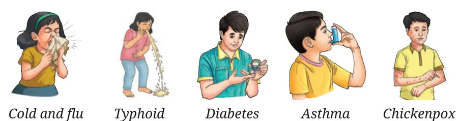
Communicable: cold and flu, typhoid, chickenpox. Non-communicable: diabetes, asthma.
E2.Identify the non-communicable diseases: (i) Typhoid (ii) Asthma (iii) Diabetes (iv) Measles.
(b) (ii) and (iii): asthma and diabetes.
E3.Flu outbreak in school: (i) immediate actions by the school; (ii) responding kindly to a bench-mate with flu; (iii) protecting yourself and others.
(i) Ask students with flu symptoms to stay home and rest until well; inform parents; keep classrooms ventilated and clean (desks, door handles); set up handwashing with soap; encourage masks and covering coughs; avoid crowded assemblies for a few days; consult a health worker.
(ii) Speak politely and privately: "You seem unwell. Would you like to wear a mask, sit near the window or tell the teacher so you can rest at home?" Offer to share notes later. Do not tease or avoid them rudely.
(iii) Wash hands often, avoid touching eyes, nose and mouth, wear a mask, do not share bottles, tiffin or handkerchiefs, keep a little distance, eat well and sleep enough, get a flu vaccine if advised, and stay home if you get symptoms.
E4.Travelling to a city where malaria is prevalent: (i) precautions before, during and after; (ii) explaining nets and repellents to your sibling; (iii) ignoring health advisories.
(i) Before: read health advisories, consult a doctor, pack mosquito nets, repellent and long-sleeved clothes. During: sleep under nets, apply repellent, wear full sleeves, especially at dusk and dawn, stay in places with screens, avoid areas with stagnant water. After: watch for fever with chills and sweating for a few weeks and see a doctor quickly, telling them about the trip.
(ii) "Malaria germs live in some mosquitoes. If a mosquito cannot bite you, it cannot pass on the germ. The net is a shield while you sleep and the repellent keeps mosquitoes away when you are awake."
(iii) They may get malaria, fall seriously ill, need hospital care, and may even carry the infection back home where mosquitoes can spread it to others.
E5.Your uncle started smoking to fit in: (i) what to say without being rude; (ii) if a friend offers you a cigarette; (iii) how schools can help.
(i) "Uncle, we love you and want you healthy. Smoking can cause cancer and heart and lung disease, and the smoke harms us at home too. Good friends will respect you even if you don't smoke. Shall we find a doctor or quitline to help you stop?"
(ii) Say a clear and confident "No, thanks, I don't smoke", change the topic or move away, and stay with friends who respect your choice. Tell a trusted adult if you are pressured.
(iii) Awareness talks by doctors, posters and plays, keeping campuses tobacco-free (no shops within 100 yards, as per law), counselling, sports and clubs that build confidence, and involving parents.
E6.Saniya: "Antibiotics can cure any infection, so we don't need to worry about diseases." What questions can Vinita ask?
- "Can antibiotics cure a cold, flu, dengue or COVID-19, which are caused by viruses?"
- "Do antibiotics work against malaria, which is caused by protozoa?"
- "What happens if bacteria become resistant to antibiotics?"
- "Can antibiotics prevent or cure diabetes, asthma or cancer?"
- "If antibiotics cure everything, why do we still need vaccines, clean water and hygiene?"
These show that antibiotics work only against bacteria, can stop working because of resistance, and do nothing for non-communicable diseases, so prevention still matters.
E7.Make a bar graph of dengue cases (January to December) and answer (i) to (iv).
Draw months on the X-axis and number of cases on the Y-axis (scale: 1 cm = 10 cases). Bar heights: 10, 12, 15, 18, 22, 40, 65, 65, 65, 30, 30, 20. See the interactive Dengue Graph.
(i) July, August and September (65 cases each).
(ii) January (10 cases).
(iii) The monsoon: rain collects in pots, coolers, tyres and drains, giving still water where mosquitoes breed; warm, humid weather helps mosquitoes and the virus multiply.
(iv) Before June: clean drains, remove stagnant water, empty coolers weekly, cover water tanks, fogging and larvicide spraying, distribute nets, awareness campaigns about full sleeves and repellents, and prepare hospitals for testing.
E8.You are in charge of a school health campaign. What key messages would you use?
- Wash hands with soap for 20 seconds; cover coughs and sneezes.
- Drink safe water, eat freshly cooked food, use clean toilets.
- No still water: stop mosquitoes, stop dengue and malaria.
- Get vaccinated: protect yourself and others.
- Eat a balanced diet: less oil, salt and sugar; no daily junk food.
- Move every day: one hour of play, yoga or exercise.
- Limit screens, sleep 8 to 10 hours, talk about your worries.
- Say no to tobacco and alcohol; antibiotics only on prescription.
E9.Why should we not take antibiotics for viral infections like cold, cough or flu?
Antibiotics act on parts of bacterial cells that human cells and viruses do not have, so they cannot kill viruses and will not cure a cold or flu. Taking them anyway kills our good bacteria, can cause side effects, and helps bacteria develop antibiotic resistance, so antibiotics may fail when we really need them. A viral cold is cleared by our immune system with rest and fluids.
E10.Which disease(s) may spread if drinking water is contaminated by excreta from an infected person: Hepatitis A, Tuberculosis, Poliomyelitis, Cholera, Chickenpox?
Hepatitis A, Poliomyelitis (polio) and Cholera. Tuberculosis and chickenpox spread through the air.
E11.Why is the immune response much stronger on the second exposure to the same pathogen?
On first exposure, the immune system meets a new pathogen and needs time to recognise it and make the right defence, so the response is slow and low (and we may fall ill). It then keeps a memory of that pathogen (memory cells). On the second exposure, it recognises the pathogen at once and gives a quick, much stronger response that destroys it, often before we feel ill. Vaccines use this memory to give acquired immunity. Watch it in the Immune Memory lab.
Discover, design and debate (projects)
P1.Maintain a health diary for a month (food, hygiene, exercise, sleep, screen time, mood).
| Date | Food | Hygiene | Exercise | Sleep | Screen | Mood |
|---|---|---|---|---|---|---|
| 1 Dec | Roti, dal, sabzi, fruit | Bath, brushed twice, washed hands | 45 min cricket | 9 h | 1.5 h | 😊 |
At the end, find patterns: for example, mood is better on days with more play and sleep and less screen time.
P2.Read about Suniti Solomon, Asima Chatterjee, Yellapragada Subbarao and Mary Poonen Lukose.
- Suniti Solomon: microbiologist who first documented HIV/AIDS in India (1986) and set up care and testing centres.
- Asima Chatterjee: chemist who developed anti-epileptic and anti-malarial drugs from medicinal plants.
- Yellapragada Subbarao: biochemist whose work led to methotrexate (a cancer drug) and the antibiotic aureomycin, and to understanding folic acid.
- Mary Poonen Lukose: India's first woman Surgeon General (Travancore), who worked for maternal and child health.
P3.How was smallpox eradicated and why did it work? Debate: should vaccination be required for everyone?
The WHO campaign (intensified from 1967) vaccinated huge numbers of people and used surveillance and ring vaccination: every new case was found, isolated, and everyone around it vaccinated. It worked because smallpox spread only between humans (no animal carrier), had a clear rash that was easy to spot, and the vaccine was effective and gave long protection. The last natural case was in 1977 and it was declared eradicated in 1980. Debate points: For: protects people who cannot be vaccinated (herd protection), can wipe out diseases. Against: personal choice, rare side effects, need for trust and awareness. Many countries require some vaccines for school entry.
P4.Learn the correct sequence of steps for CPR on an adult.
- Check the scene is safe; tap the person and shout to check response.
- Call for help and emergency services (112 or 108 in India); ask someone to bring an AED if available.
- Check breathing (no more than 10 seconds).
- If not breathing normally, give chest compressions: heel of hand on the centre of the chest, push hard and fast, about 5 to 6 cm deep, 100 to 120 per minute, letting the chest rise fully.
- If trained, give 2 rescue breaths after every 30 compressions; otherwise continue hands-only CPR.
- Use an AED as soon as it arrives and follow its voice prompts; continue until help takes over.
Practise only on a dummy with a trained doctor or instructor.
P5.Invite a doctor to talk about malnutrition, under-nutrition and over-nutrition.
Prepare questions: What is the difference between under-nutrition (too little food or nutrients: stunting, anaemia) and over-nutrition (too much energy-rich food: obesity, diabetes)? Which foods give iron, iodine and vitamin C? How much sugar and salt is safe? What should a healthy tiffin contain? Write a short report and make a class poster.
P6.Create your own health card. What would you include?
Name, age, blood group, height, weight and BMI, vision and dental check, vaccination record with dates, allergies, past illnesses and medicines, daily habits (sleep, exercise, screen time), emergency contact, family doctor's number, and a space for check-up dates and the doctor's advice.
P7.Debate: Are there ill-effects of fast food on companion animals?
Yes: fried, salty, sugary and spicy food can cause obesity, stomach upset, pancreas problems and dental disease in pets; some foods are poisonous to dogs and cats (chocolate, onion, garlic, grapes, cooked bones, xylitol sweetener). Other side: a tiny plain treat once in a while may not harm, but pets need a balanced diet made for their species. Conclusion: just like us, pets stay healthy with proper food, exercise and vet check-ups.